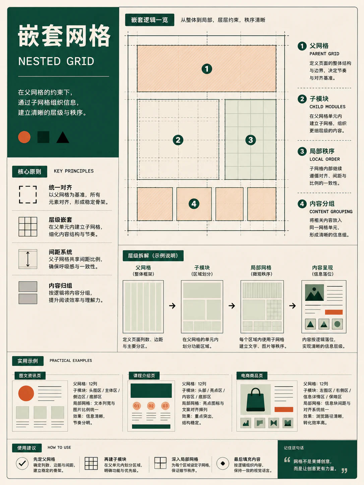

统一对齐脊梁
8 列主区阅读 3 分钟
原海报总述：「在父网格的约束下，通过子网格组织信息，建立清晰的层级与秩序。」左右拖动上方画布的橙色分界脊，或调节下方参数把它校准到 4/4。
FOUR-TIER CASCADE · FROM PARENT FRAME TO CONTENT
海报把嵌套网格的施工顺序钉成铁律：先定父网格 → 再建子模块 → 深入局部网格 → 最后填充内容。拖动下面的展开滑轨，把原本叠成一张页面的四层图纸拉开，看清每一层怎样托住上面那一层。
一旦先摆图片和卡片，每个区块都会为了凑合当下那段字而微调像素边距。页面长到第三屏时，左边界、卡片缝、侧栏宽全部对不上号——哪怕视觉元素再精致，整页也会透出「拼贴感」。
GUTTER HIERARCHY & GESTALT PROXIMITY
原海报核心原则第三条写着：「父子网格共享间距比例，确保呼吸感与一致性」。下面左右两组真实 CSS 网格刻意关掉了父区外框，初始处于「外缝 8px / 内缝 24px」的倒挂错态——调动步进器，亲眼看清楚视觉归属在哪个像素点瞬间翻转。
不画边框是检验嵌套间距最好的盲测法：如果撤掉底色后眼睛仍能一眼分清 A 组与 B 组，间距层级就立住了。
INDEPENDENT NESTED GRID VS. CSS SUBGRID
网格家族里最容易混为一谈的是「205 嵌套网格」与「206 子网格（Subgrid）」。核心差别只有一句话：标准嵌套网格让子容器拥有完全独立的内部列和行，互不牵制；子网格则让内部元素直接继承父网格的轨道线。
PRACTICAL EXAMPLES FROM POSTER 205
205 原海报下半段给出了三个最常见的真实页面——图文资讯页、课程介绍页、电商商品页。切换题材、缩放屏幕断点，并分别开关「父网透视」与「子网透视」，看三套完全不同的业务怎样共享同一套 12 列嵌套文法。
ORIGINS & ARCHITECTURAL LINEAGE
「大框套小格」不是网页时代的新发明。从 1960 年代瑞士出版业的活动网格，到 2008 年后的 12 列网页框架，再到原生二维 CSS Grid，半个世纪里设计师始终在解决同一个问题：如何让一整套出版物或产品界面既统一，又能应付千变万化的局部信息？
WHEN NOT TO NEST & OVER-NESTING COST
这句话有一个容易被忽略的前提：页面的信息层级必须真的复杂到需要两层秩序。当内容本来就是一条平直的阅读流，或者屏幕窄到 375px，硬套三四层父子网格非但给不了力量，反而会把宝贵的版面全耗在层层内边距和缝隙上。
DIAGNOSTIC PRACTICE & ORIGINAL POSTER ARCHIVE

“网格不是束缚创意，而是让创意更有力量。”
在父网格的约束下，通过子网格组织信息，建立清晰的层级与秩序。